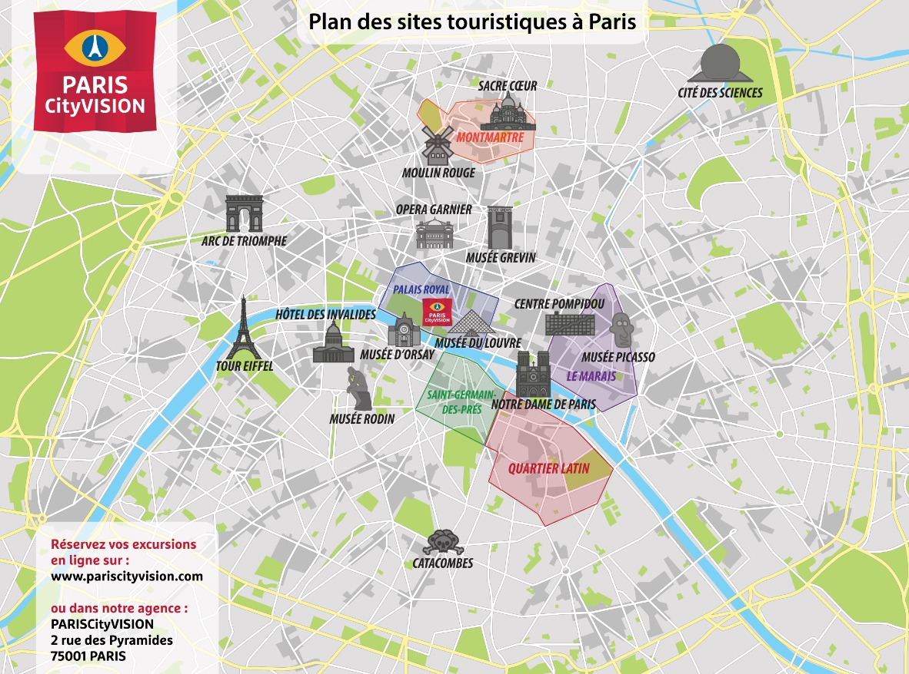
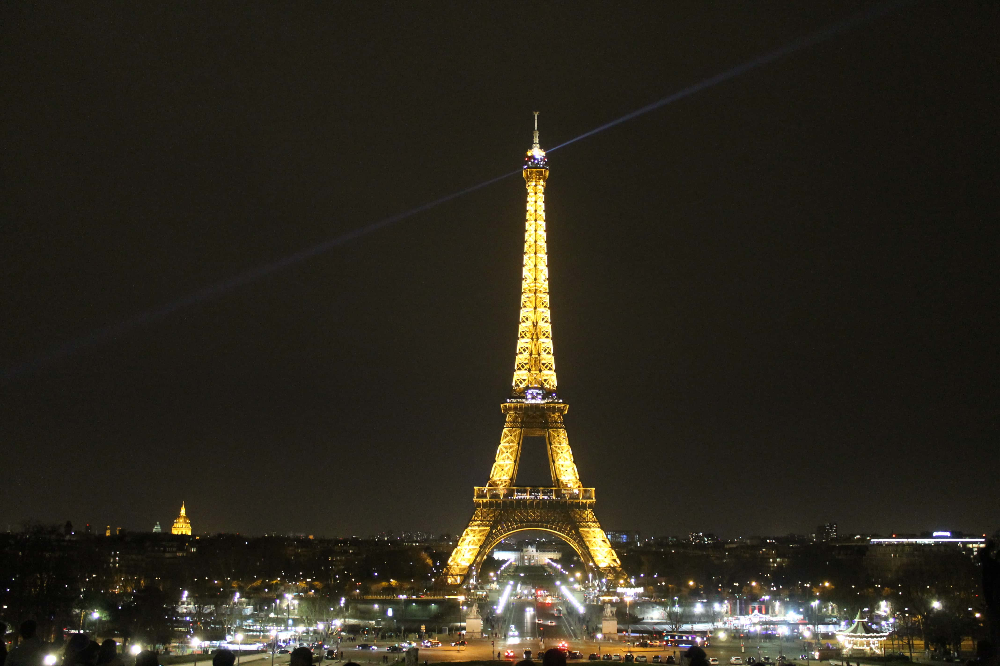
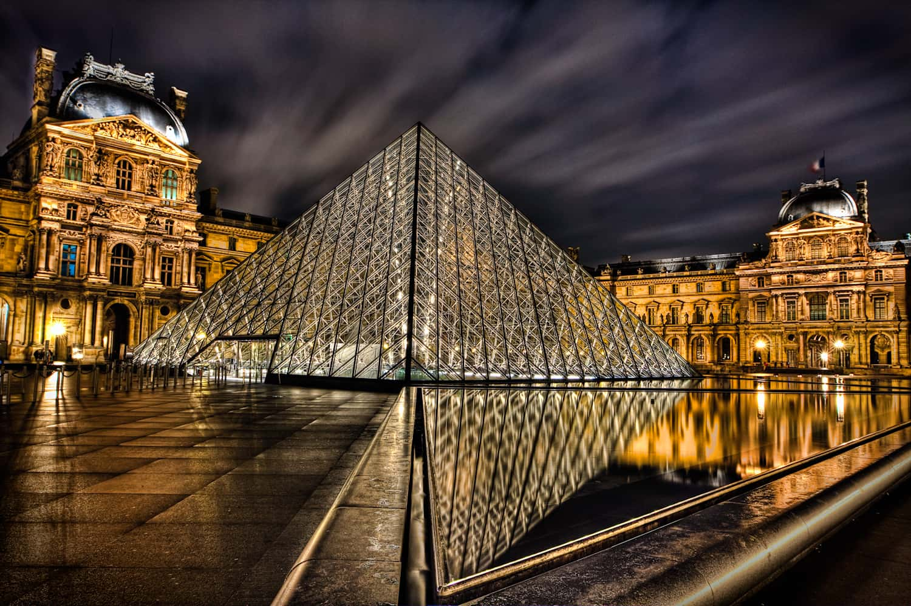
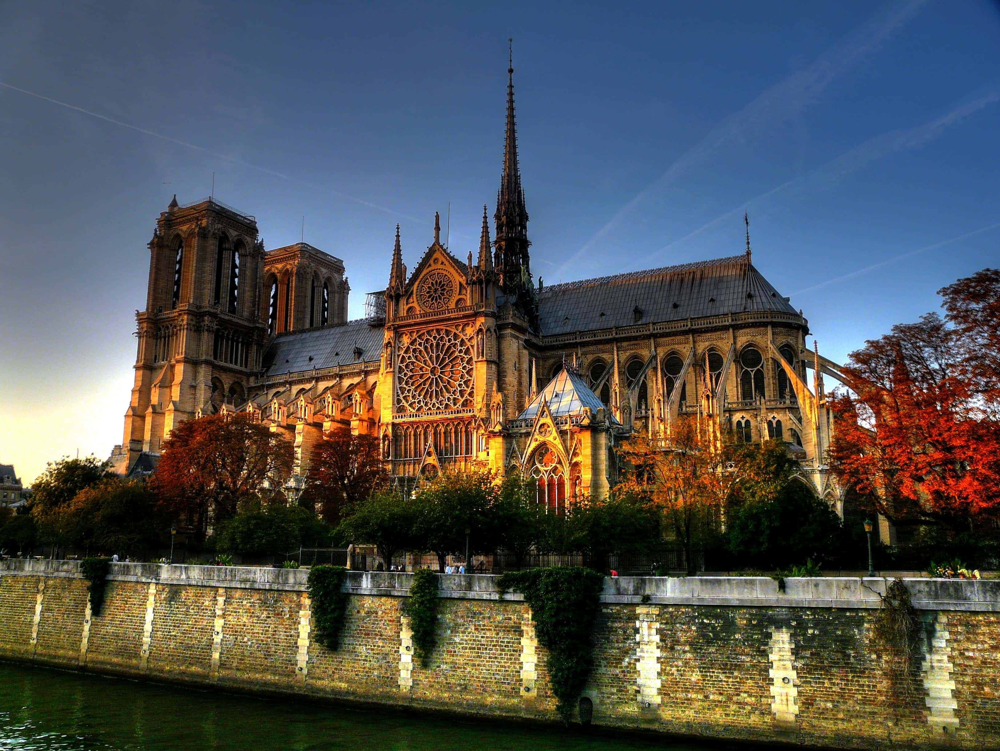
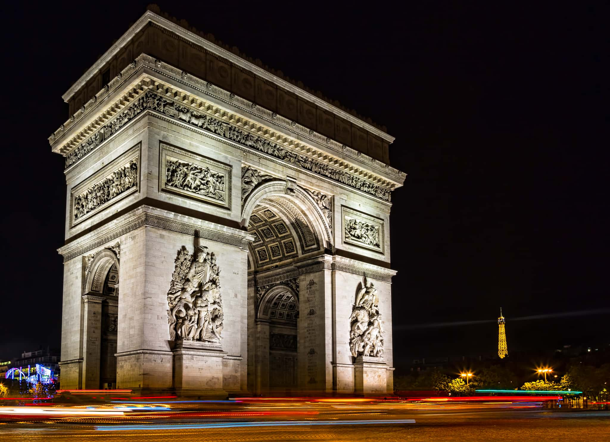
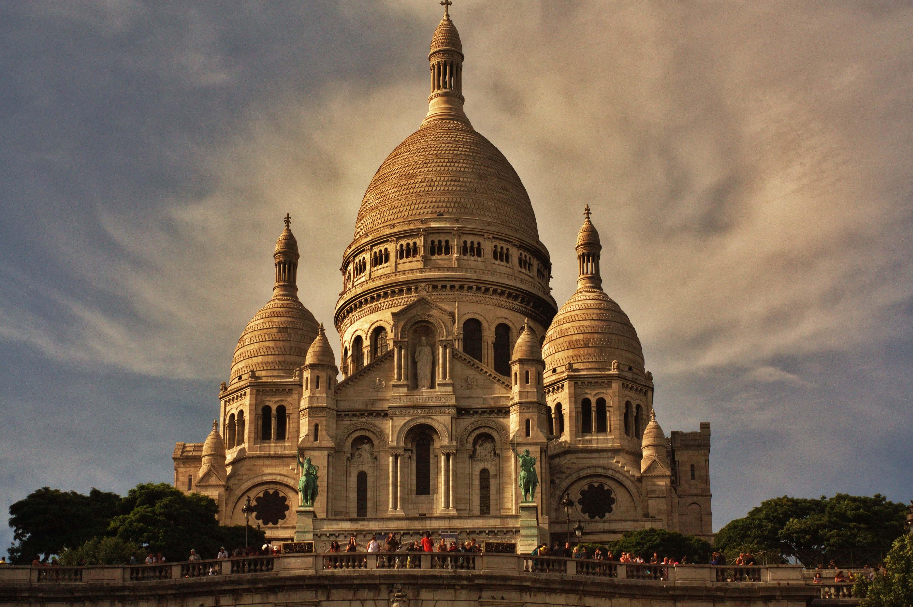

Paris
Paris, capitale de la France, est une grande ville européenne et un centre mondial de l'art, de la mode, de la gastronomie et de la culture. Son paysage urbain du XIXe siècle est traversé par de larges boulevards et la Seine. Outre les monuments comme la tour Eiffel et la cathédrale gothique Notre-Dame du XIIe siècle, la ville est réputée pour ses cafés et ses boutiques de luxe bordant la rue du Faubourg-Saint-Honoré.


- Tour Eiffel -
- La Tour Eiffel a été construite par Gustave Eiffel à l’occasion de l’Exposition Universelle de 1889 qui célébrait le premier centenaire de la Révolution française.
- Symbole de la France dans le monde, vitrine de Paris, elle accueille aujourd’hui près de 7 millions de visiteurs par an (dont environ 75% d’étrangers), ce qui en fait le monument payant le plus visité au monde.
- Haute de 330 mètres, elle est visible depuis tout Paris et au-delà, de jour comme de nuit jusqu'à 1 heure du matin, grâce à ses éclairages, ses scintillements à heures fixes et son phare d'une portée de 80 km à 360 degrés.

- Musée du Louvre -
- Ce musée a été inauguré en 1793 et est aujourd'hui l'un des trois plus grands musées d'art du monde aux côtés du Musée de l'Ermitage et du Musée national de Chine.
- Le musée se signale par la pyramide de verre de son hall d'accueil, érigée en 1989 dans la cour Napoléon et qui en est devenue emblématique.
- Parmi ses pièces les plus célèbres figurent La Joconde, la Vénus de Milo, Le Scribe accroupi, La Victoire de Samothrace et le Code de Hammurabi, qui concentrent l'attention des visiteurs, qui ont été 10,2 millions en 2018 dont 75% d'étrangers.
- Sa surface d'exposition est de 72 735 m.

- Cathédrale Notre-Dame de Paris -
- La cathédrale Notre-Dame de Paris est l'un des monuments les plus emblématiques de Paris et de la France. Elle est un lieu de culte catholique, siège de l'archidiocèse de Paris, dédié à la Vierge Marie.
- Sa construction s'étend sur environ deux siècles, de 1163 au milieu du XIVe siècle.
- Les deux rosaces qui ornent chacun des bras du transept sont parmi les plus grandes d'Europe.
- La cathédrale inspire de nombreuses œuvres artistiques, notamment le roman de Victor Hugo Notre-Dame de Paris paru en 1831.
- Le violent incendie du 15 avril 2019 détruit la flèche et la totalité de la toiture couvrant la nef, le chœur et le transept. Il s'agit du plus important sinistre subi par la cathédrale depuis sa construction. Depuis, Notre-Dame est fermée au public. Sa reconstruction à l'identique est décidée en 2020 et sa réouverture au public prévue pour 2024.

- Arc de Triomphe de l'Étoile -
- L'Arc de Triomphe, à la place de l'Etoile, est parmi les sites parisiens les plus iconiques et sert comme monument aux victoires napoléoniennes.
- Le monument mesure 50 mètres de haut, 22 mètres de large et 45 mètres de long.
- L'Arc de Triomphe a été inauguré le 29 juillet 1836, après 30 années de travaux.
- L'Arc de Triomphe fait partie des monuments nationaux à forte connotation historique. Cette importance s'est renforcée depuis que la dépouille du Soldat inconnu, tué lors de la Première Guerre mondiale, y a été inhumée le 28 janvier 1921.

- Basilique du Sacré-Cœur de Montmartre -
- Situé en haut de la Butte Montmartre, au quartier des artistes, le Sacré-Coeur veille sur Paris.
- La construction de cette église, monument à la fois politique et culturel, suit l'après-guerre de 1870 et fut officiellement achevée en 1923.
- À l’intérieur du Sacré-Coeur, la plus grande mosaïque française à l'abside, des vitrails, statues, bas-reliefs, et une crypte.